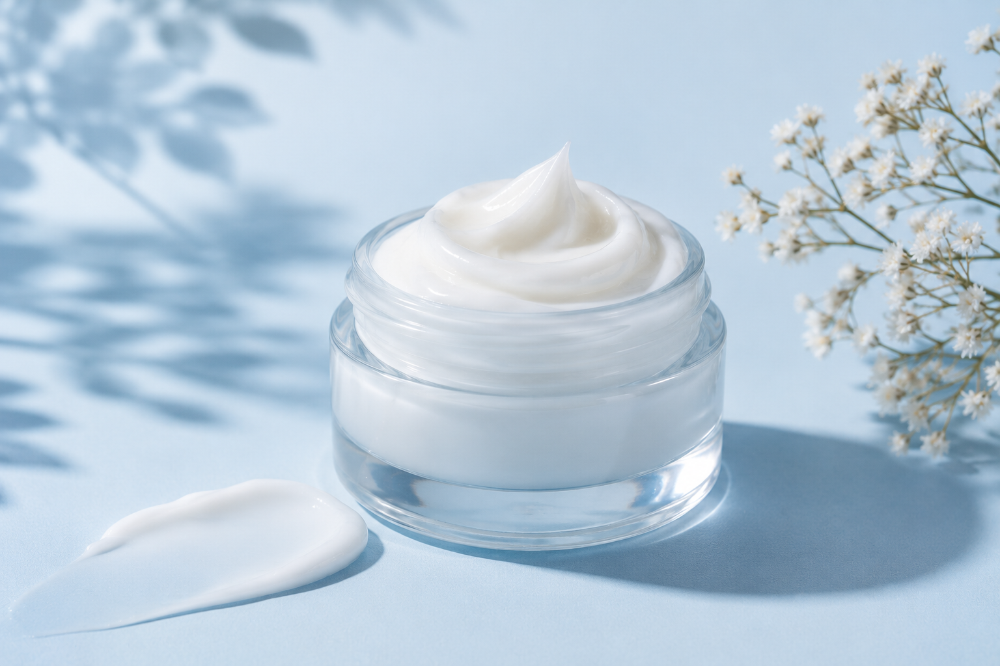

INGREDIENTES
Descubra o que sua pele precisa
Conheça os ingredientes que fazem parte dos cuidados com a pele e descubra suas funções.

Ceramidas
Proteção e hidratação
Ajudam a fortalecer a barreira da pele e a manter sua hidratação natural.
Onde encontrar: cremes hidratantes e loções.
Glicerina
Hidratação
Ajuda a atrair e reter água na pele, contribuindo para mantê-la hidratada e macia.
Onde encontrar: sabonetes, cremes e loções.

Vitamina C
Proteção e luminosidade
Tem ação antioxidante e ajuda a uniformizar o tom da pele, contribuindo para uma aparência mais luminosa.
Onde encontrar: séruns e cremes faciais.

Ácido salicílico
Oleosidade e poros
Ajuda a desobstruir os poros e controlar a oleosidade da pele.
Onde encontrar: sabonetes e esfoliantes.